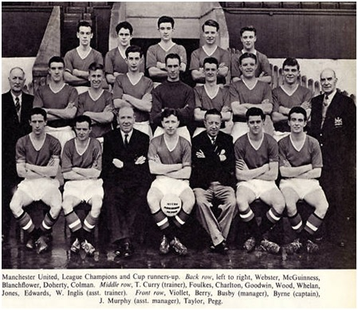
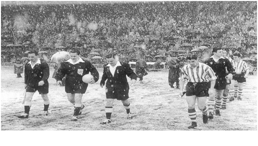

Chương 10

hập kỷ 1950, nổi lên làn sóng những ngôi sao tuổi teen. Âm nhạc có Evis Presley, Paul Anka làm mưa làm gió, điện ảnh có James Dean bụi bặm, lãng tử, khiến biết bao trái tim mê mệt, riêng làng thể thao Anh Quốc thì có các cầu thủ trẻ của Manchester United. Thời ấy, mọi thứ chưa bị thương mại hóa như ngày nay. Dù các chàng trẻ đều đã nổi danh, họ vẫn ở nhà trọ, đi xe đạp hay phương tiện công cộng, không villa biệt thự hay xế hộp siêu sang. Mỗi lần ra đường, họ hòa đồng cùng người hâm mộ, chứ không như những David Beckham hay Cristiano Ronaldo của thời hiện đại, xung quanh dầy đặc vệ sỹ kính đen hầm hố. Chính vì thế, không ai lại không yêu họ, mến họ.
“Các cầu thủ vô cùng hòa đồng”, Tom Clare, một fan hâm mộ, kể lại, “Sau giờ tập, họ đi xe buýt về nhà, chúng tôi cứ việc leo lên xe ngồi cùng. Hằng ngày đi shop, cuối tuần đi sàn nhảy cũng gặp họ hoài. Lúc rảnh, họ còn ra công viên đá banh chung với tụi con nít nữa.”
Dẫu yêu mến và đặt nhiều kỳ vọng, mọi người vẫn hiểu rằng cầu thủ trẻ chỉ là…cầu thủ trẻ. Việc gì cũng cần có thời gian; không thể đòi hỏi họ chỉ sau một đêm bỗng trở thành đội quân bất khả chiến bại. Mùa 1952-1953, United gặp khủng hoảng nghiêm trọng ở vị trí thủ môn. Có thời điểm cả ba thủ thành của đội cùng lúc chấn thương, khiến…thư ký Les Olive phải xỏ găng vào sân giữ gôn. Thậm chí trong các trận gặp Bolton và Sunderland, Jack Rowley và Johnny Carey phải đóng vai thủ môn bất đắc dĩ! Cuối mùa, CLB không bảo vệ được ngôi vô địch, chỉ cán đích ở vị trí thứ 8. Hai mùa tiếp theo, họ xếp hạng 4, rồi hạng 5.
Năm 1955 chứng kiến sự ra đi của hai cựu binh cuối cùng từ thế hệ 1939: Allenby Chilton và Jack Rowley. Đội hình United từ đây hầu như gồm toàn cầu thủ trẻ, độ tuổi trung bình chỉ 21. Matt Busby tin tưởng vào các chàng trẻ của mình đến nỗi sau khi đưa về Tommy Taylor vào tháng 3, 1953, suốt hơn bốn năm trời, ông không mua thêm bất kỳ ai. Đến kỳ chuyển nhượng, trong khi các CLB khác mua bán tấp nập, United chỉ lặng lẽ đôn cầu thủ từ đội trẻ lên đội một.
Mùa 1955-1956, các chuyên gia đánh giá cao United, nhưng cho rằng cầu thủ đội còn quá non, chưa đủ sức giành chức vô địch. Họ đều lầm. Học trò Busby tuy trẻ chứ không non. Họ đều đã kinh qua vài mùa Hạng Nhất, giờ đây đều đạt đến độ chín. Dù vậy, do Taylor, Berry, Viollet và Edwards cùng chấn thương, United khởi đầu giải rất chệch choạc, đá 8 trận thua đến 3, chỉ loay hoay ở giữa bảng.
Khi Taylor và Edwards tái xuất, gió ngay lập tức đổi chiều. Taylor ghi liền 11 bàn chỉ trong 10 trận, giúp United lên ngôi đầu bảng vào tháng 11. Từ ngày 31 tháng 12, 1955 cho đến cuối mùa, Man đỏ chỉ thua thêm duy nhất một lần. Trong trận chung kết sớm vào đầu tháng 4, 1956, đội vượt qua Blackpool 2-1, nhờ 2 bàn của Berry và Taylor. Tại hai trận cuối cùng, United thắng một hòa một, đăng quang vô địch với 11 điểm nhiều hơn Blackpool. Ở thời mỗi trận thắng chỉ được tính 2 điểm, 11 điểm là một khoảng cách xa diệu vợi.
Bắt chính cho United mùa đó là thủ môn Ray Wood (25 tuổi). Hàng thủ gồm Roger Byrne (27) và Bill Foulkes (24). Tiền vệ có Eddie Colman (19), Duncan Edwards (19), và Mark Jones (22). Hàng công có Tommy Taylor (24), Dennis Viollet (22), David Pegg (20), Johnny Berry (30), và John Doherty (21)[1]. Ngoài ra, phải kể thêm các cầu thủ dự bị đóng góp nhiều công như: Ian Greaves (24), Jackie Blanchflower (23), Wilf McGuinness (18), Jeff Whitefoot (23), và Billy Whelan (21). Trong khi Wood, Byrne, Foulkes, Edwards, Taylor, và Berry đều là tuyển thủ Anh, Pegg và Viollet chơi cho đội U-23 (sau này cũng được lên ĐTQG). Blanchflower và Whelan đại diện Ireland.
Đội hình vô địch “siêu trẻ” của Manchester United được báo giới trìu mến đặt cho biệt danh “đồng ấu Busby”. Tuy nhiên, chính Busby lại rất ghét cái tên này, bởi đồng ấu tức là bé con, mà bé con thì yếu ớt vô cùng. Cầu thủ Manchester mà lại yếu ớt hay sao? Sang thập niên 1960, có người lại gọi United là Quỷ Đỏ. Busby thích tên Quỷ Đỏ, đề nghị dùng tên ấy làm biệt hiệu chính thức cho CLB. Đến năm 1973, hình tượng con quỷ đỏ được đưa vào logo đội bóng[2].

Thế hệ “đồng ấu Busby” (Ảnh: Amoris.ch)
Giành chức quán quân Anh, Manchester United được mời tham dự Cúp C1, giải đấu giành cho các nhà VĐQG Châu Âu. Ý tưởng thành lập Cúp C1 đã manh nha từ năm 1927, song phải đến 1955 mới thành hiện thực, nhờ sự vận động tích cực của báo L’Équipe (Pháp) và tổng biên tập Gabriel Harnot. Nhà vô địch Châu Âu đầu tiên là Real Madrid (TBN), đội thắng Stade de Reims (Pháp) 4-3 trong trận chung kết mùa 1955-1956.
Mùa ấy, lẽ ra Chelsea đại diện cho xứ sở sương mù, nhưng họ bị Ban Tổ Chức Các Giải VĐQG Anh (Football League Management Committee, từ nay gọi tắt là FL[3]) ngăn trở, không cho đi. Một năm sau, đến lượt United, FL lại tiếp tục cấm đoán. Theo lý luận của FL, lịch thi đấu quốc nội đã dày đặc, không còn thời gian cho các CLB tham dự thêm một giải nào khác. Vả lại, Anh là ông tổ túc cầu, bóng đá Anh là nhất thiên hạ, vô địch Anh tức là vô địch hoàn vũ, cần gì phải hạ mình dự cái Cúp C1 vô bổ?
Đương nhiên, lý lẽ trên chỉ để tự ru ngủ mình. Đã từ lâu, nước Anh không còn thống trị nền túc cầu thế giới. Tại World Cup 1950, ĐTQG Anh thất thủ trước “chú lùn” Mỹ. Các năm 1953, 1954, họ bị “đội tuyển vàng” Hungary hạ nhục với những tỷ số kinh hoàng 6-3 và 7-1. Matt Busby nhận thức rất rõ bóng đá Anh thực ra đang thụt lùi so với Âu lục; muốn tiến bộ cần phải hòa nhập, không thể cứ một mình một cõi.
“Thưa ngài chủ tịch”, Busby nói với Harold Hardman, “Bóng đá ngày nay đã trở nên môn thể thao toàn cầu, không còn là độc quyền của Anh hay Scotland nữa. Chúng ta cần tiến ra trường quốc tế, bởi tương lai nằm ở đó.”
“Được được”, Hardman đáp, “Nếu ông nghĩ như vậy thì tôi hoàn toàn ủng hộ”.
Hardman và Busby bèn đến gặp Stanley Rous, tổng thư ký FA, thuyết phục Rous chuẩn y cho United đá Cúp C1. Tổng thư ký vừa đồng ý, họ liền đăng ký dự giải ngay. Lãnh đạo FL giận tím ruột, nhưng đành chấp nhận sự đã rồi. FA dù sao vẫn là cấp trên của FL, điều FA đã quyết, FL không thể chống.
Trái với thái độ của FL, các cầu thủ United ai cũng vui mừng trước cơ hội lần đầu dự giải đấu mới. “Mọi người đều rất phấn khích”, Bobby Charlton kể, “Cái cảm giác được đi chơi bóng ở nước ngoài nó lạ lắm, mới lắm. Thời đó chưa có TV, chúng tôi chẳng bao giờ được xem bóng đá các nước như Pháp, Đức, TBN. Muốn biết họ có giỏi hay không chỉ có cách là trực tiếp tranh tài thôi. Thật là những chuyến phiêu lưu thú vị”.
Đối thủ đầu tiên của United ở Cúp C1 là nhà vô địch Bỉ Anderlecht. Thắng trên sân khách 2-0, Man đỏ dùng Maine Road làm sân nhà trong trận lượt về, do Old Trafford chưa có dàn đèn, nên chưa đạt chuẩn tổ chức các trận cầu Châu Âu. Trận lượt về này, United nã 10 trái không gỡ vào lưới đối phương, trong đó Viollet ghi 4 bàn, còn Taylor lập hattrick. Đến nay, đây vẫn là trận thắng đậm nhất trong lịch sử CLB. “United năm đó là CLB Anh mạnh nhất mà tôi từng thấy”, tiền đạo Van den Bosch của Anderlecht nhớ lại, “Theo tôi, đội hình 1957 của họ có nhiều tài năng hơn cả đội hình gần đây, với những Rooney và Ronaldo.”
Đánh bại Borusssia Dortmund nơi vòng 2, United gặp Athletic Bilbao ở tứ kết. Tháng 1, 1957, đội phải bay sang TBN giữa cơn bão tuyết. Thời tiết xấu, máy bay nhồi lên nhồi xuống, khiến cầu thủ nôn thốc nôn tháo. Tệ hơn nữa, Bill Foulkes, trong cơn say ngủ, khua tay động chân thế nào mà làm tắt mất hệ thống sưởi, làm mọi người ai cũng rét run. Chủ tịch Hardman lạnh đến phát cảm, phải vào bệnh viện ngay khi vừa đến phi trường.
Bão tuyết cứ thế hoành hành trong nhiều ngày. Sau thất bại 3-5 trước Bilbao, United ra sân bay về nước, bão vẫn chưa hết. Đường băng đầy những băng, và tuyết bám dày trên cánh phi cơ, nên chuyến bay phải tạm hoãn. Busby ra lệnh cho cầu thủ tham gia giúp đỡ cào tuyết, phá băng, để có thể sớm lên đường. Ông nóng lòng vì sợ về không kịp trận gặp Sheffield Wednesday trong khuôn khổ giải VĐQG. FL đang rất cay cú United; nếu đội về trễ, chắc chắn sẽ bị họ xài xể không thương tiếc, thậm chí còn trừ điểm!
Trận lượt về trên sân Maine Road, không ai nghĩ United lật ngược nổi thế cờ: Đối thủ là Bilbao, nhà vô địch TBN cơ mà, sao có thể thắng họ 3 bàn? Vậy mà đội đỏ làm được. Viollet mở tỷ số cho chù nhà vào cuối hiệp một, trước khi Taylor và Berry ghi thêm hai bàn trong hiệp hai. Trận thắng 3-0 hoành tráng này khai sinh truyền thống lội ngược dòng của United. Trong bài tường thuật trận đấu, ký giả Henry Rose của Daily Express cảm thán: “Khi viết những dòng này, tay tôi còn run, tim còn đập mạnh, dù trận cầu kết thúc đã vài giờ. Tôi là một trong 65000 con người may mắn, được có mặt tại SVĐ, chứng kiến trận túc cầu hay nhất trong lịch sử. 90 phút đã qua là 90 phút cháy bỏng, cuốn hút đến tột cùng, sẽ mãi mãi còn ghi trong ký ức người hâm mộ. Xin vinh danh 11 người hùng áo đỏ Manchester United. Tổ quốc tự hào vì các anh”.
Bước vào tháng 3, United thẳng tiến trên con đường đến cú ăn ba. Đội đã vào bán kết C1 và chung kết Cúp FA, còn tại giải VĐQG thì chơi liền 26 trận bất khả chiến bại, vững vàng trên ngôi đầu bảng. Họ chinh phục CĐV với lối chơi tấn công cuồn cuộn, hoa dạng, đầy sức mạnh song cũng đầy chất nghệ.
Tuy vậy, muốn vào chung kết Cúp Châu Âu, trước hết United phải vượt được đỉnh Thái Sơn Real Madrid. Dù chưa có Puskas, Real lúc đó đã sở hữu những siêu sao như Di Stefano, Raymond Kopa và Gento. Đội hình United cũng mạnh, nhưng mới lần đầu dự giải, không khỏi bị ngợp trước nhà đương kim vô địch. Real thắng 3-1 trong trận lượt đi đầy bạo lực tại Bernabeu, rồi nhanh chóng dẫn 2-0 trong trận lượt về ở Old Trafford (lúc này đã có dàn đèn). United nỗ lực hết mình vào hiệp hai, song 2 bàn của Taylor và Charlton chỉ đủ giúp họ kiếm được một trận hòa danh dự.
10 ngày sau trận thua Real, United đá chung kết Cúp FA với Aston Villa. Trận đấu mới diễn ra được sáu phút, thủ thành Ray Wood đã chấn thương, phải rời sân. Do không có quyền thay người, Jackie Blanchflower phải lui xuống giữ cầu môn. Sau khi được chữa trị, Wood tái xuất ở vị trí…tiền đạo cánh (vì vẫn còn đau, không bắt bóng nổi). Với đội hình chắp vá: Tiền vệ làm thủ môn, còn thủ môn lại chơi tiền đạo, không lạ gì khi United bị Villa dẫn trước 2-0. Trong những phút cuối cùng, Busby đánh liều đưa Wood trở lại bắt gôn, trả Blanchflower về vị trí cũ, đồng thời đẩy Edwards lên chơi tiền đạo. Nhưng đã quá muộn: United chỉ gỡ được một bàn vào phút 83, do công Taylor.
Giấc mộng ăn ba tan mất hai, Man đỏ chỉ bảo vệ thành công danh hiệu VĐQG. Mùa 1956-1957, CLB về nhất với 64 điểm, trở thành đội vô địch có số điểm cao nhất kể từ Arsenal năm 1931. Với tổng cộng 103 bàn thắng, họ cũng là đội đầu tiên ghi hơn 100 bàn trong một mùa, kể từ Manchester City mùa 1936-1937.
Có rất nhiều gương mặt nổi bật trong mùa 1956-1957. Tommy Taylor tiếp tục bùng nổ, dẫn đầu danh sách phá lướivới 34 bàn trên tất cả các mặt trận. Ngay mùa đầu tiên lên đội một, Bobby Charlton ghi 12 bàn thắng, trong đó có 2 bàn trong trận ra mắt. Thế nhưng, ngôi sao sáng nhất phải là Duncan Edwards[4]. Vừa đá bóng vừa thực hiện nghĩa vụ quân sự, phong độ anh không vì thế mà sút giảm. Tính cả mùa, Edwards thi đấu…97 trận cho United, ĐTQG Anh, và CLB quân đội. Anh về nhì trong danh sách Cầu Thủ Xuất Sắc Nhất Nước Anh do FWA bầu chọn (sau Tom Finney), và thứ ba trong danh sách Quả Bóng Vàng Châu Âu của France Football (sau Di Stefano và Billy Wright).
Với Edwards và đồng đội ở đỉnh cao phong độ, Matt Busby đặt mục tiêu cho mùa giải mới 1957-1958: Giành Cúp C1, và lần thứ ba liên tiếp vô địch giải Hạng Nhất. Sau hơn 4 năm im hơi lặng tiếng trên thị trường chuyển nhượng, United mua Harry Gregg của Doncaster với giá 23000 bảng, mức kỷ lục thế giới thời đó giành cho một thủ môn. Busby lắc đầu trước đề nghị hỏi mua Tommy Taylor từ Inter Milan, và từ chối không do dự lời mời về làm HLV trưởng Real Madrid, dẫu CLB TBN sẵn sàng trả mức lương “khủng” 100000 bảng/năm.

Tứ kết lượt đi Cúp C1 mùa 1956-1957: Bilbao tiếp United giữa trời giá tuyết (Ảnh: Vavel.com)
Chú thích:
[1]Trong các tiền đạo United, Taylor và Viollet là cặp trung phong chủ lực. Mùa 1955-1956, Taylor ghi 25 bàn, Viollet cũng 20 lần lập công.
[2] Theo huyền sử Việt Nam, vua đầu tiên của nước ta là Kinh Dương Vương. Kinh Dương Vương đặt quốc hiệu là Xích Quỷ, tức Quỷ Đỏ. Vậy xem ra, giữa Việt Nam và Manchester United đã có lương duyên từ rất lâu!
[3] Cần phân biệt giữa FA và FL. Nói cho dễ hiểu, FA tương đương với VFF ở Việt Nam, còn FL giống như VPF.
[4] Cùng thực hiện nghĩa vụ quân sự với Edwards có Bobby Charlton.